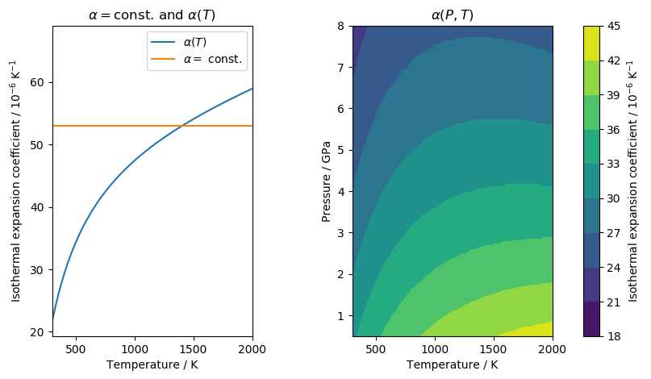

Python module
Follow the steps outlined in _installation, in order to be able to use
VelocityConversion as a Python module. Start with importing the main
class:
In [1]: from VelocityConversion import MantleConversion
In [2]: MC = MantleConversion()
Input data
The input data can be loaded from a file or provided as a numpy array. The data should be organised in columns:
Column
Name
Description
Unit
0
X
A coordinate
Anything
1
Y
A coordinate
Anything
2
Z
Depth
masl
3
v
Velocity
m/s
To load data from a file, use
LoadFile().
In [3]: MC.LoadFile('../../Examples/VsSL2013.dat')
Loading input file: ../../Examples/VsSL2013.dat
> Velocity scale factor is 1.0
Alternatively, the data can be provided as a numpy array using
LoadArray(). When providing the data
as a numpy array, it should have the shape [nrows, 4]. This example shows
the numpy array structure by simply displaying the array loaded from the file
above:
# Adjust numpy just for some prettier printing of the array
In [4]: np.set_printoptions(precision=2, suppress=True)
In [5]: MC.DataRaw
Out[5]:
array([[ 0. , 6000000. , -50000. , 4287.65],
[ 100000. , 6000000. , -50000. , 4268.31],
[ 200000. , 6000000. , -50000. , 4199.97],
...,
[1000000. , 7800000. , -200000. , 4329.93],
[1100000. , 7800000. , -200000. , 4338. ],
[1200000. , 7800000. , -200000. , 4352.14]])
In any case, the velocity type needs to be provided with
SetVelType() (S or P):
In [6]: MC.SetVelType('S')
Defining a mantle assemblage
The mineralogical assemblage of the mantle rocks must be provided. The
assemblage is defined by denoting the fractional proportion of a mineral phase
of the mantle rock. It can be defined either by using a Python dictionary, or
loaded from a file using LoadMineralogy():
In [7]: assemblage = {
...: "ol": 0.67,
...: "cpx": 0.045,
...: "opx": 0.225,
...: "gnt": 0.06,
...: "XFe": 0.11
...: }
...:
Note
XFe is the molar iron content of the rock and is optional. It can also
be defined by calling SetXFe().
The available mineral phases are provided in the MinDB.csv. This file can
be edited freely if new phase information is available.
To defined the composition, call
SetMineralogy():
In [8]: MC.SetMineralogy(assemblage)
> XFe assigned to 0.11
> All mineral phases are known
> Sum of mineral phases equals 1.0
or call DefaultMineralogy() in order
to set the default composition (garnet lherzolite by Jordan, 1979).
Start the conversion
To start the conversion, simply run
Convert():
In [9]: MC.Convert()
Filling tables
> Number of depth values: 5
> Number of temperatures: 2701
> Pressure calculation : AK135
> T range: 300.0 to 3000.0 steps 1.0
Starting temperature estimation
> Progress: 0%
> Progress: 0%
> Progress: 20%
> Progress: 40%
> Progress: 60%
> Progress: 100%
> Done!
Results
The results are stored in two 1D arrays named Result_T and Result_Rho.
The order of the data in these arrays corresponds to the order of the points
in the input file.
In [10]: print(MC.Result_T)
[1288.78 1301.07 1341.16 ... 1552.29 1546.6 1536.44]
In [11]: print(MC.Result_Rho)
[3311.46 3310.48 3307.29 ... 3407.16 3407.53 3408.18]
Warning
The temperatures in Result_T are in Kelvin!
We can plot the results for 50km depth:
In [12]: import matplotlib.pyplot as plt
....: from matplotlib.tri import Triangulation
....:
....: def make_plot(MCObject, depth):
....: fig, ax = plt.subplots(1, 3, sharex=True, sharey=True)
....: indices = MCObject.DataRaw[:, 2] == depth
....: depth_slice = MCObject.DataRaw[indices]
....: velocity = depth_slice[:, 3]
....: temperature = MCObject.Result_T[indices]
....: density = MCObject.Result_Rho[indices]
....: tri = Triangulation(depth_slice[:, 0]/1000.,
....: depth_slice[:, 1]/1000.)
....: m_v = ax[0].tricontourf(tri, velocity, levels=np.arange(3500, 4700, 100))
....: m_t = ax[1].tricontourf(tri, temperature, cmap='hot', levels=np.arange(950, 1650, 50))
....: m_d = ax[2].tricontourf(tri, density, cmap='plasma', levels=np.arange(3280, 3340, 5))
....: for a in ax:
....: a.set_aspect('equal')
....: fig.colorbar(m_v, ax=ax[0], label='Vs / m/s', orientation='horizontal',
....: ticks=[3500, 4000, 4500])
....: fig.colorbar(m_t, ax=ax[1], label='T / K', orientation='horizontal',
....: ticks=[1100, 1300, 1500])
....: fig.colorbar(m_d, ax=ax[2], label='Density / kg/m3', orientation='horizontal',
....: ticks=[3280, 3300, 3320, 3340])
....:
In [13]: make_plot(MC, -50e3)
Saving to file
The results can be saved to an output file with
SaveFile():
In [14]: MC.SaveFile('fileout.dat')
Saving results to fileout.dat
> Done!
The output file will contain metadata about the conversion parameters, for example:
# Temperature output
# Input file: VsSL2013.dat
# Velocity scale factor: 1.0
# Mantle composition:
# cpx - 0.133
# gnt - 0.153
# jd - 0.045
# ol - 0.617
# opx - 0.052
# XFe - 0.11
# Pressure calculation: AK135
# Wave frequency (Omega) / Hz: 0.02
# Anelasticity parameters: Sobolev et al. (1996)
# Alpha depending on: Nothing
# Columns:
# 1 - X
# 2 - Y
# 3 - Z / masl
# 4 - V_S / m/s
# 5 - T_syn / degC
# 6 - Rho / kg/m3
Optional settings
Pressure reference model
Pressure in VelocityConversion is computed one-dimensionally using the
earth reference model AK135. If desired, pressure
calculation can be performed using a homogeneous density. Therefore, define
In [15]: MC.SimpleP = True
In [16]: MC.SimpleRho = 3000. # kg/m3, the default value
If pressure was computed in this way, a note in the output metadata will be added:
# Pressure calculation: Simplified
# Pressure calculation density: 3000.0 kg/m3
Attenuation parameters
The attenuation model used can be changed. By default, parameterisation after
Sobolev et al. (1996) is used. If desired, it can be changed to the parameters
by Berckhemer et al. (1982) using
SetQMode():
In [17]: MC.SetQMode(1) # Sobolev et al. (1996)
Using Q after Sobolev et al. (1996)
a = 0.15
A = 0.148
H = 500000.0 J/mol
V = 2e-05 m3/mol
In [18]: MC.SetQMode(2) # Berckhemer et al. (1982)
Using Q after Berckhemer et al. (1982)
a = 0.25
A = 0.0002
H = 584000.0 J/mol
V = 2.1e-05 m3/mol
Thermal expansion coefficients
Goes et al. (2000) use a temperature-dependent isobaric thermal expansion
coefficient. In general, the expansion coefficient will increase with
increasing pressure. However, the expansion coefficient is also sensitive to
pressure changes such that it will decrease with increasing pressure.
Temperature and pressure act against each other. I therefore implemented three
different options to use this expansion coefficient. They are defined using
SetAlpha():
|
Explanation |
const |
Constant. Use \(\alpha_0\) of Saxena and Shen (1992) |
T |
T-dependent. Use the formulation of Saxena and Shen (1992) |
PT
|
Pressure- and temperature dependent. Uses data extracted from
Hacker and Abers (2006)
|
The temperature dependent alpha is defined by
Where the parameters \(\alpha_i\) are taken from Saxena and Shen (1992).
They are provided in the file MinDB.csv.
The data for pressure and temperature dependent behaviour were extracted from the Excel worksheet by Hacker and Abers (2006) using a VBA script.
The following figure shows how the expansion coefficients compare for clinopyroxene (cpx):
In [19]: MC.SetAlpha('const')